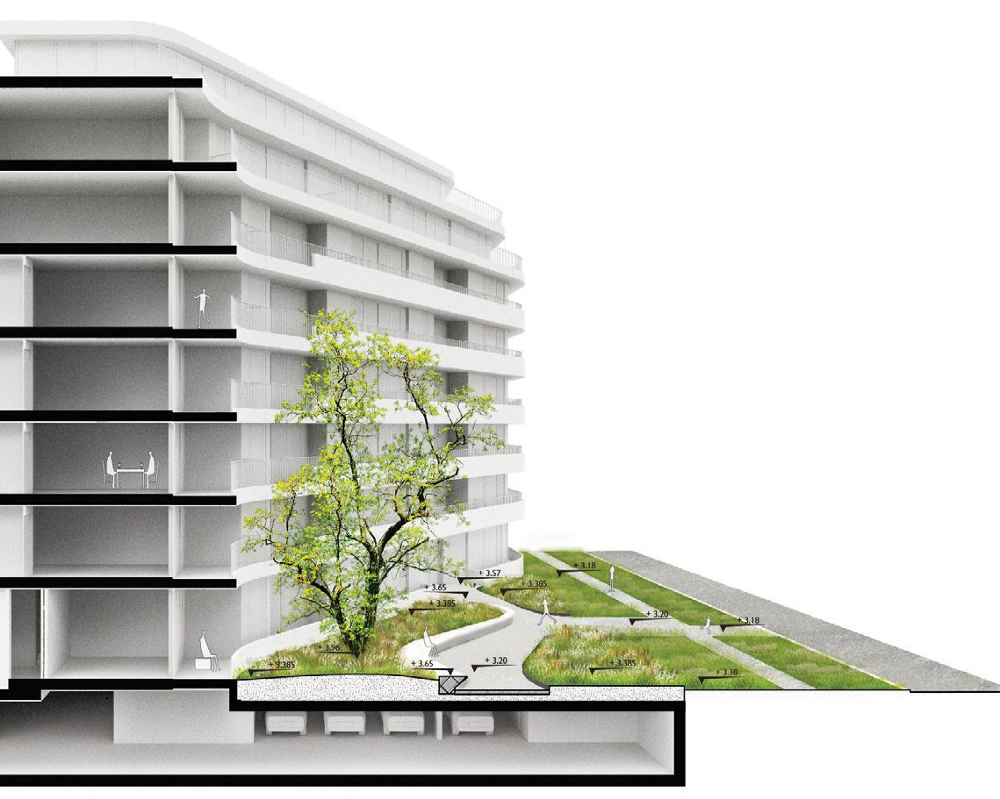

All work
De daktuin van Overhoeks
Amsterdam2021
A roof garden organised around one long, sinuous stone bench.

In this roof garden, architecture and nature become one. A long, sinuous bench of natural stone serves a dual purpose — a comfortable place to sit, and a guiding element through a landscape of dense planting.
Its flowing lines and concealed lighting create an atmosphere in which aesthetics and function are indistinguishable. The design turns the roof into a coherent, immersive space where every element has a job to do.
- Assignment
- Roofgarden
- Firm
- Buro Sant en Co
- Design
- 2021
- Status
- TO
- Collaborations
- rots-maatwerk
- Team
- Paul Plambeck, Jie Yang
